About this document
Scope and purpose
This document explains how to setup and use Traveo™ II Body Entry
Family Starter Kit. The document also explains how to debug with
single core and dual core environment in IAR Embedded Workbench for
ARM (EWARM). The document uses the Traveo™ II Body Entry starter kit
board with the Sample Driver Library (SDL).
Intended audience
This document is intended for software and hardware engineers
integrating Traveo II Body Entry device into their application.
1 Getting started
This section explains the hardware set up.
Table 1lists the pre-requisites for the set up.
Table 1 Pre-requisites
| 1 |
CYTVII-B-E-1M-SK |
Traveo II Body Entry Series Starter KIt
|
| 1 |
Micro USB cable |
For power and communication |
| 1 |
PC |
With USB port |
| 1 |
IAR EWARM 8.42.1 |
Downloaded from the web |
| 1 |
Sample Driver Library v7.0,0 |
Downloaded from the web |
| - |
Firmware |
Pre-installed |
1.1Connection setup
Connect the USB cable from the PC to the Starter kit. The Starter
kit is powered by the PC via the USB cable (5 V). Check if the mode
LED (LED3) and the power LED (LED2) are turned ON.
1.2 Power up
When powered ON, the device will start executing the pre-installed
firmware, which is indicated by the blinking user LEDs (LED1 is
controlled by core Arm® Cortex®-M0+ (CM0+) and LED4 is controlled by
core Cortex-M4 (CM4)).
Note:
To indicate that the starter kit is powered ON and the USB
controller is starting in the correct mode, the amber colored
status LED3 must be permanently ON. But, LED3 does not indicate a
successful USB driver installation.
1.3 Installing kit driver
To work with the Starter kit, the KitProg3 USB-UART driver must be
installed on the system. For more details, see the Updating KitProg3
chapter in the KitProg3 user guide [1].
Confirm that the Starter kit is recognized as a KitProg3 device on Windows (open Device Manager, follow the
menu path View > Devices by container) as shown in Figure 3. This completes the hardware setup.
Note:
Do not press SW3. Pressing SW3 changes the mode of the USB controller. This is necessary only for
upgrading the USB driver firmware and other activities. For more details, see the KitProg3 user
guide [1].
For more information related to the Starter kit, see the Traveo II Starter Kit User Guide [2].
2 SDL and IAR EWARM setup
This section explains how to run an example from the SDL on the Traveo II Starter Kit using the IAR C-SPY debugger.
2.1 SDL environment setup
Download the latest SDL for the Traveo II Starter Kit on the target system. Install the SDL outside the default
Program Files to allow the IDE to access and create temporary files. Figure 4 shows the sample path.
2.2IAR EWARM setup
Open the Readme.pdf from the root folder of the SDL and use the same link to download the version of IAR
EWARM supported by the SDL.
Download the software and run the installation (note that the installation might take some time). When you
open the IAR EWARM for the first time, select the license in the License wizard. If you do not have the license, it
is strongly recommended to register for Code size limited license type. See Figure 5.
Note:
IAR EWARM v8.42.1 is only for reference; always use the IAR EWARM version supported by the
specific SDL release.
2.3 Connection setup
There are two debugging methods with IAR EWARM:
- Debugging with code downloaded on to RAM
- Debugging with code downloaded on to the FLASH memory (described in this document)
SDL supports three types of workspaces under FLASH memory debugging as listed in Table 2.
Table 2 IAR Flash workspaces and functions
| Workspace |
Application core |
Number of cores supported |
Details |
| Single core CM0+ workspace "tvii1bm_flash_cm0plus_template" |
No |
Single |
Single core download and debug for CM0+ core |
| Single core CM4 workspace "tvii1bm_flash_cm4_mc_template" |
Yes |
Single |
Single core download and debug for CM4 core; works as client/slave workspace in multicore configuration.
Note:
It is possible to
debug only with
CM4, when CM0+
executes some
code, thus
enabling CM4.
|
| Dual core CM0+ and CM4 workspace "tvii1bm_flash_cm0plus_cm4_template" |
Yes |
Dual |
Dual core download and debug for CM0+ and CM4 core; works as master workspace in multicore configuration
|
Note:
Both CM0+ and CM4 can do normal code execution, but from an architectural point only CM4 is
considered as the application core. After a reset, the default core is always the CM0+ core. To
enable the CM4 core, CM0+ must call Cy_SysEnableApplCore (). In the SDL, this is usually done
within main_cm0plus.c.
Before downloading and debugging with the multicore master project, you must build the multicore slave
project for the application core (which is CM4 here)
Open the master workspace (dual core CM0+ and CM4 workspaces) for multicore debugging. The slave
workspace (single core CM4 workspace) will automatically open from the master workspace when you click
Download and Debug.
2.3.1Debugging with single core CM0+ workspace
-
1.Start IAR EWARM and open the SDL template workspace file: tviibe1m\tools\iar\flash\tviibe1m_flash_cm0plus_template
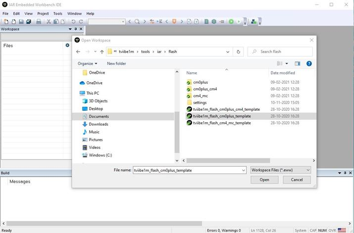
-
2.Select the workspace revision starter_kit from drop-down list under Workspace, as shown in Figure 7.
Note:
Ignore other workspace revisions for this Starter kit. The other revisions constitute the MCU
assembled on other evaluation boards (CPU board).
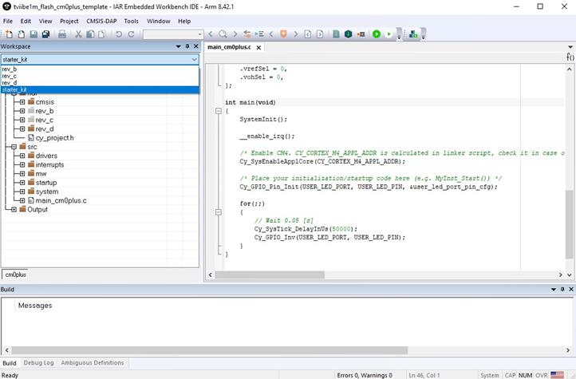
-
3.For the build, right-click the cm0plus – starter_kit and select Rebuild All.
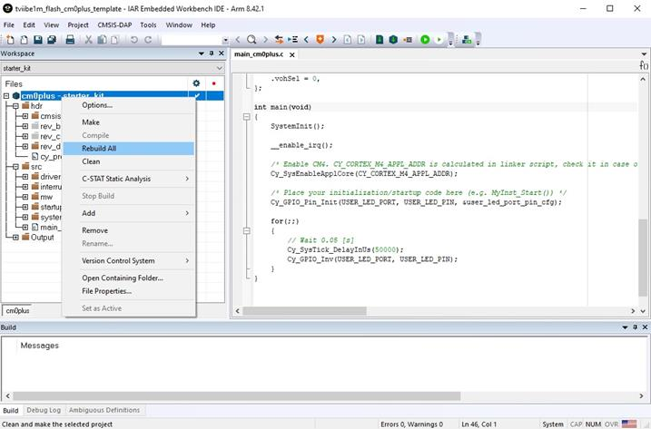
-
4.The rebuild process starts. Check for errors and warnings in the Build log.
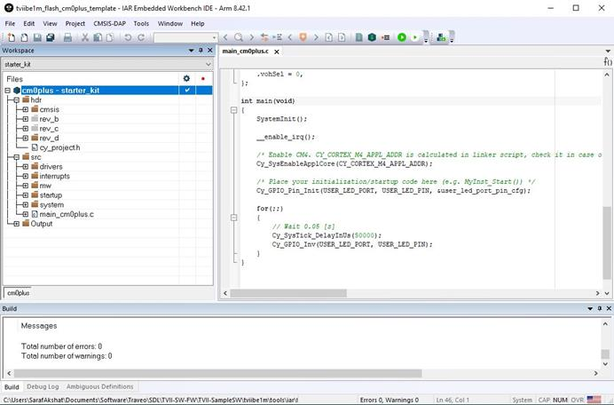
-
5.To load the program to the FLASH region of CM0+ core, click the green Download and Debug icon.
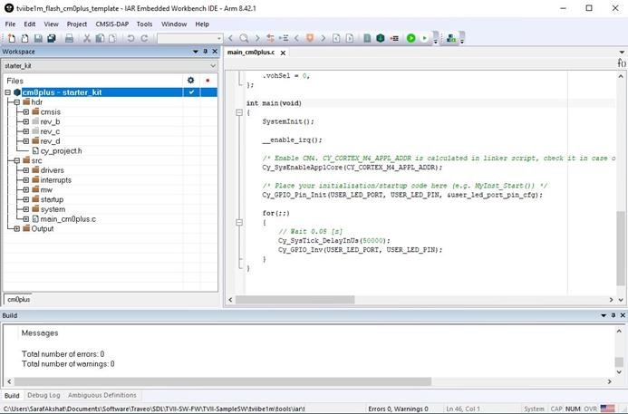
-
6.Now, click the Go icon to start execution.
Note:
You can also use the function keys in the Debug window: Go (F5), F10 (Step Over), F11 (Step into),
Ctrl+D (Download and Debug).
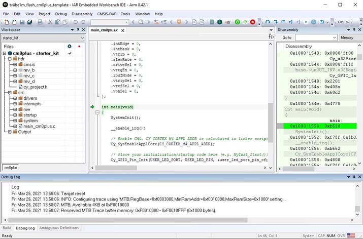
LED1 should start blinking
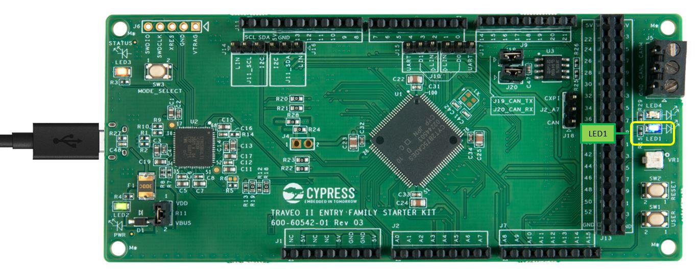
2.3.2Debugging with single core CM4 workspace
-
1.Start IAR EWARM and open the SDL template workspace file: tviibe1m\tools\iar\flash\tviibe1m_flash_cm4_mc_template
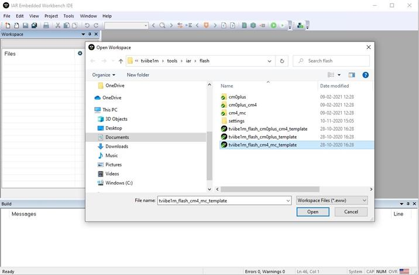
-
2.Select the workspace revision starter_kit from drop-down list under Workspace, as shown in Figure 14.
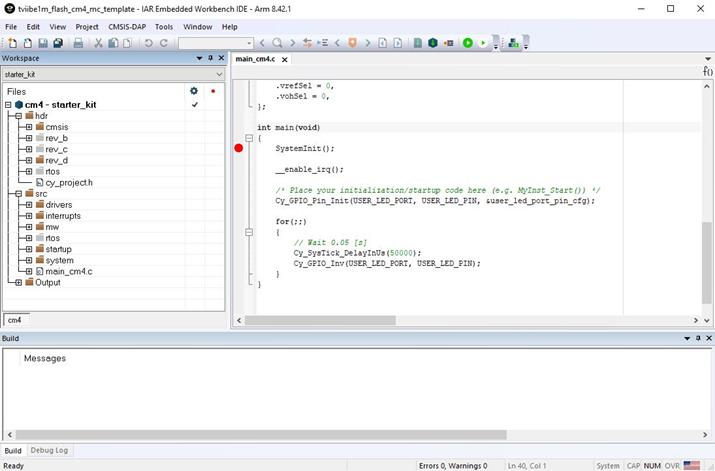
-
3.For the build, right-click the cm4 – starter_kit and select Rebuild All.
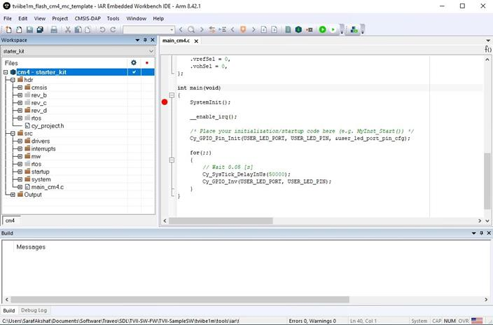
-
4.The rebuild process starts. Check for errors and warnings in the Build log.
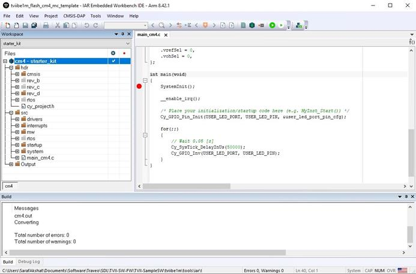
-
5.To load the program to the FLASH region of CM4 core, click the green Download and Debug icon.
-
6.Now, click the Go icon to start execution.
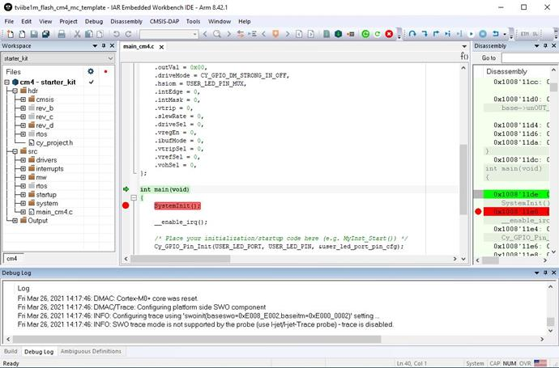
LED4 should start blinking
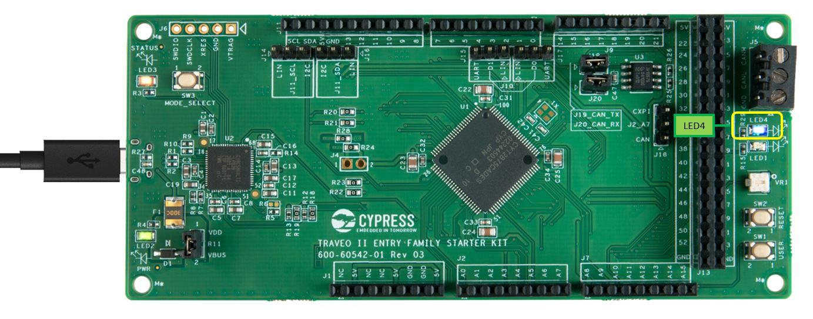
2.3.3Debugging with dual core CM0+ and CM4 workspace
-
1.Start IAR EWARM and open the SDL template workspace file: tviibe1m\tools\iar\flash\tviibe1m_flash_cm0plus_cm4_template
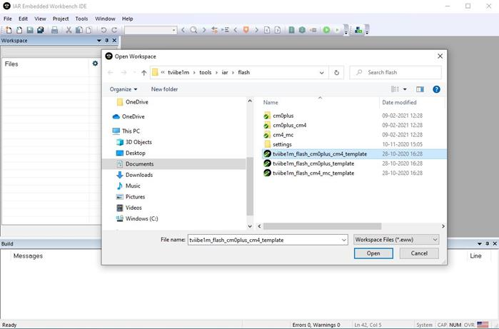
-
2.Select the workspace revision starter_kit from drop-down list under Workspace, as shown in Figure 21.
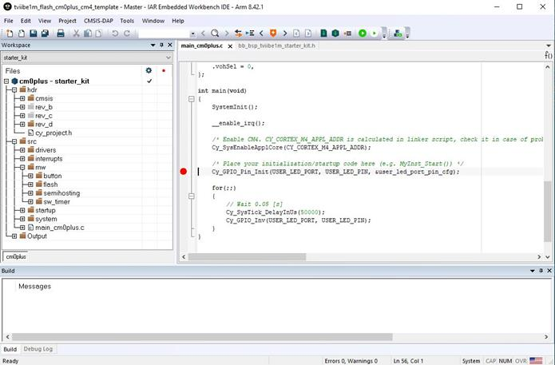
-
3.For the build, right-click the cm0plus – starter_kit and select Rebuild All.
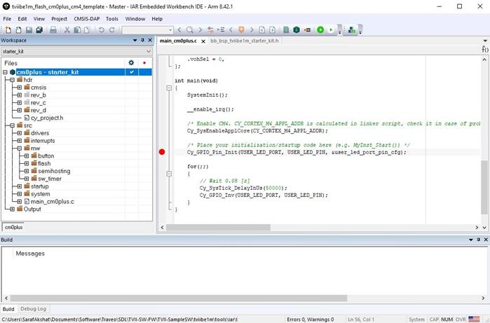
-
4.The rebuild process starts. Check for errors and warnings in the Build log.
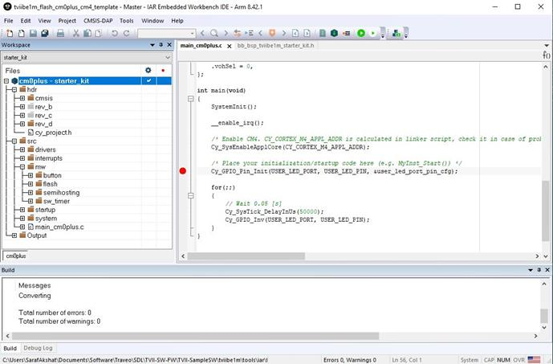
-
5.To load the program to the FLASH region of CM0+ and CM4 cores, click the green Download and Debug icon. This will automatically open the CM4 multicore client workspace, and the corresponding code will be
downloaded into the FLASH region of respective cores.
-
6.Place a break point in the SystemInit()API in the CM4 core workspace. CM4 core will start executing after being enabled by CM0+ core. You can debug both cores simultaneously.
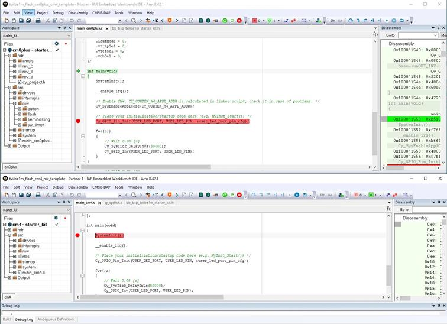
-
7.Now, click the Go icon in the CM0+ workspace to start execution. After executing
Cy_SysEnableApplCore(), CM4 core will be enabled and the execution will reach the breakpoint in the
CM4 workspace. You can now continue to debug the code from CM4 core.
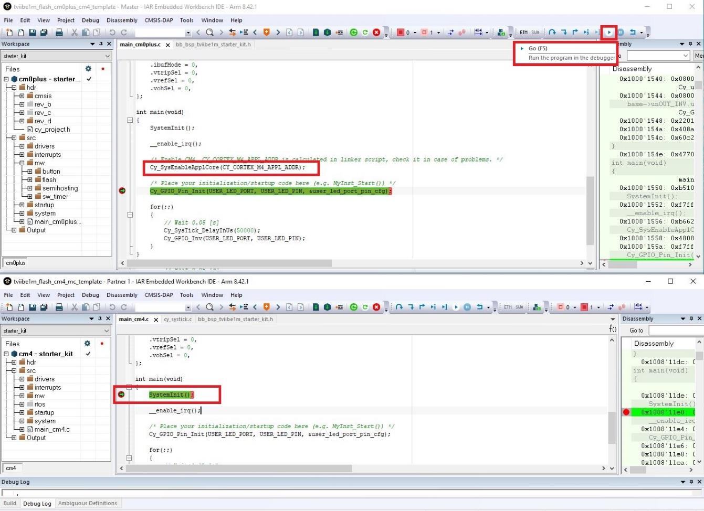
LED1 and LED4 should start blinking once both the cores are running.
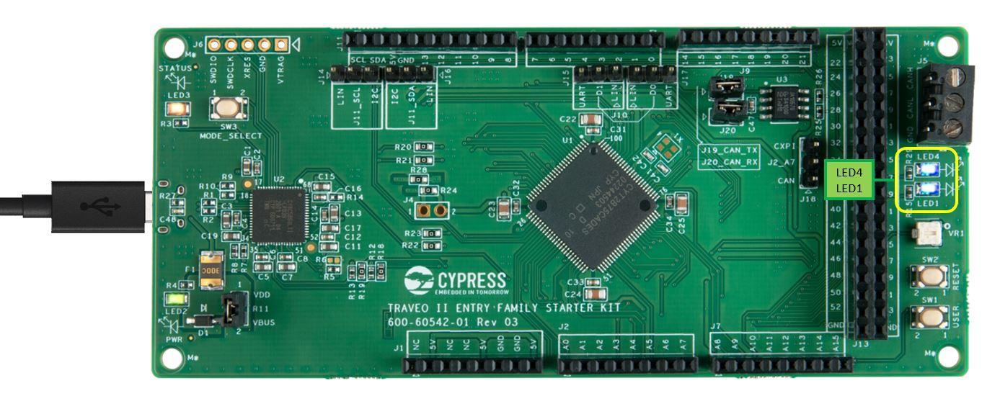
3Troubleshooting
This section explains possible issues and the workarounds.
3.1Connection troubleshooting
Error: Starter kit is not detected on the target system.
Connect the USB cable that comes with the Starter kit. Other USB cables may not connect data lines.
Make sure LED3 is ON (CMSIS-DAP mode). If not, press SW3 to change the KitProg3 device mode.
Make sure jumper R11 is closed.
3.2Driver troubleshooting
Error: Driver is not detected on the target system or “KitProg3” is not visible.
For more information on the supported driver, see the KitProg3 user guide [1]
3.3Debugger troubleshooting
Error: While programming Traveo II device, CMSIS-DAP device is not found.
Check the USB cable connection and the state of LED3 (LED should be ON for CMSIS-DAP mode)
3.4Key points
-
CM0+ core should be running while debugging with CM4 in single core mode. CM0+ core enables the CM4
core by calling the Cy_SysEnableApplCore() API.
-
CM4 core workspace (tviibe1m_flash_cm4_mc_template) should be built before building the dual core
workspace (tviibe1m_flash_cm0plus_cm4_template).
Glossary
| Terms |
Description |
| CM0+ |
Arm-Cortex-M0 plus |
| CM4 |
Arm-Cortex-M4 |
| SDL |
Sample Driver Library |
| SK |
Starter Kit |
| USB |
Universal Serial Bus |
| EWARM |
Embedded Workbench for Arm |
| C-SPY |
High Level Debugger Language for Embedded system |
Revision history
| Document version |
Date of release |
Description of changes |
| ** |
2021-04-08 |
Initial release |
|
|
|
|
|
|